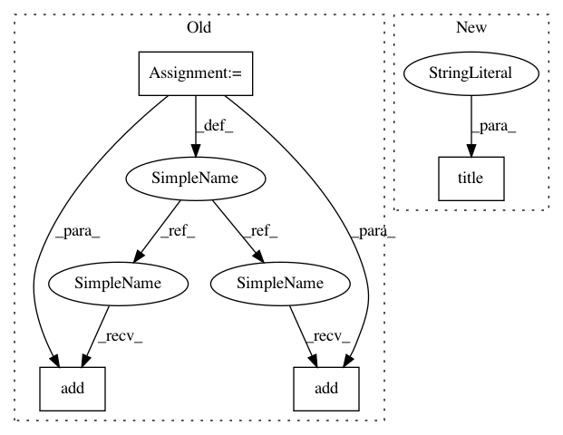

cf7d0bdc4133ea3248e054fa93aa2b5a6f8f2fca,doc/examples/compute_SNR_in_corpus_callosum.py,,,#,25
Before Change
//tensor_odfs = tenmodel.fit(data_small[roi]).odf(sphere)
fvtk.add(ren, cfa_crop)
fvtk.add(ren, mask_corpus_callosum)
fvtk.show(r)
The mask is not very good, so let"s change the threshold and restart segmenting
After Change
plt.figure("Corpus callosum segmentation")
plt.subplot(1, 2, 1)
plt.title("Corpus callosum")
plt.imshow((cfa[..., 0])[40, ...])
plt.subplot(1, 2, 2)
plt.title("Corpus callosum mask with a threshold of (%.1f, %.1f, %.1f, %.1f, %.1f, %.1f)" % threshold2)
In pattern: SUPERPATTERN
Frequency: 3
Non-data size: 4
Instances
Project Name: nipy/dipy
Commit Name: cf7d0bdc4133ea3248e054fa93aa2b5a6f8f2fca
Time: 2013-09-11
Author: stjeansam@gmail.com
File Name: doc/examples/compute_SNR_in_corpus_callosum.py
Class Name:
Method Name:
Project Name: scipy/scipy
Commit Name: 6933f80091d1a2f7ef2310a6b29988bf10443658
Time: 2007-06-10
Author: jtravs@localhost
File Name: Lib/sandbox/rbf/tests/example1.py
Class Name:
Method Name:
Project Name: nipy/dipy
Commit Name: 6c524d66dcd30d98a0f0c991252a3be644fa58ef
Time: 2013-09-11
Author: stjeansam@gmail.com
File Name: doc/examples/compute_SNR_in_corpus_callosum.py
Class Name:
Method Name:
Project Name: nipy/dipy
Commit Name: cf7d0bdc4133ea3248e054fa93aa2b5a6f8f2fca
Time: 2013-09-11
Author: stjeansam@gmail.com
File Name: doc/examples/compute_SNR_in_corpus_callosum.py
Class Name:
Method Name: